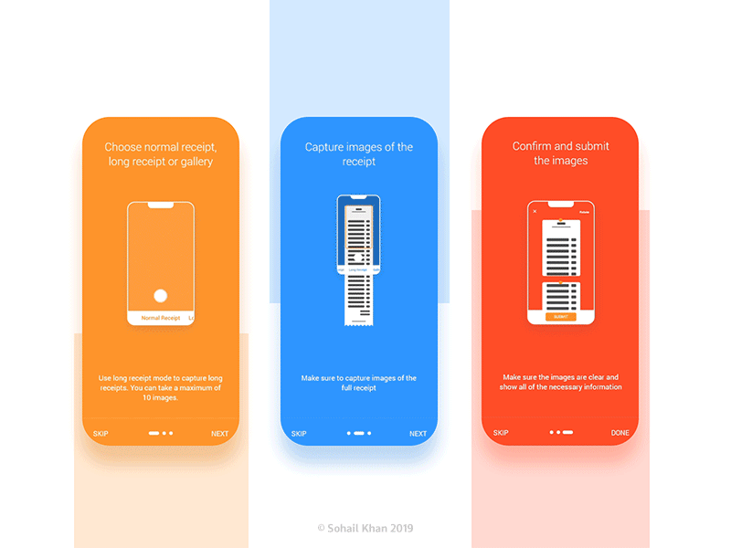

Automatic metadata captured with OCR!

What is OCR?
Optical character recognition or optical character reader (OCR) is the electronic or mechanical conversion of images of typed, handwritten or printed text into machine-encoded text, whether from a scanned document, a photo of a document, a scene-photo (for example the text on signs and billboards in a landscape photo) or from subtitle text superimposed on an image (for example: from a television broadcast).
Widely used as a form of data entry from printed paper data records – whether passport documents, invoices, bank statements, computerized receipts, business cards, mail, printouts of static-data, or any suitable documentation – it is a common method of digitizing printed texts so that they can be electronically edited, searched, stored more compactly, displayed on-line, and used in machine processes such as cognitive computing, machine translation, (extracted) text-to-speech, key data and text mining. OCR is a field of research in pattern recognition, artificial intelligence and computer vision.
Early versions needed to be trained with images of each character, and worked on one font at a time. Advanced systems capable of producing a high degree of recognition accuracy for most fonts are now common, and with support for a variety of digital image file format inputs.[2] Some systems are capable of reproducing formatted output that closely approximates the original page including images, columns, and other non-textual components.
IN ₿illsify
Captured image will be analyzed extracting metadata related and all details will be automatically extract of the bill image. Facilitating the queries of across the stored invoices